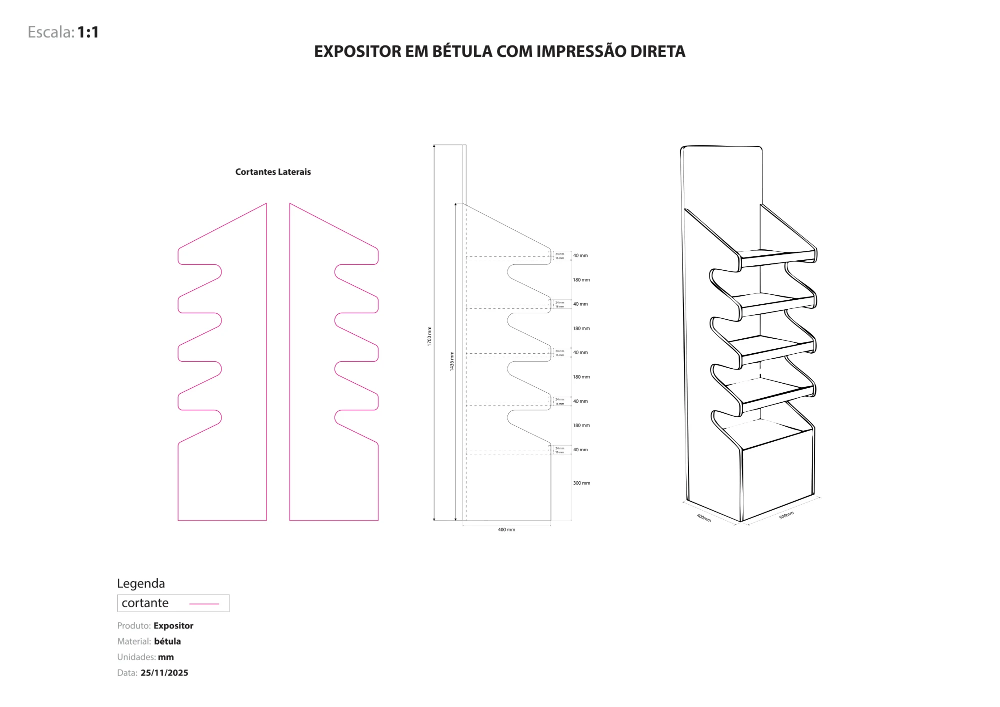

Ponto de venda
POS 3D
Expositores e estruturas para ponto de venda, pensados de raiz para serem produzidos. Modelo em 3D, preparo os desenhos técnicos com as medidas e cortantes, e faço os renders e animações para o cliente ver o resultado antes de ir para fabrico.
Self-Checkout
Animação 3D de uma estrutura de self-checkout, a mostrar como as peças encaixam e como fica montada.
Expositor Qampo
Expositor em bétula com impressão direta para a Qampo: cinco níveis, laterais com recorte ondulado e a marca aplicada diretamente na madeira.


Expositor em melamina
Expositor em aglomerado de melamina de 16 mm com vinil contracolado, com prateleira, nicho e painel superior furado para acessórios.

1800mm
- Material
- Aglomerado melamina 16 mm
- Acabamento
- Vinil contracolado
- Base
- 420 × 430 mm (medida interior)
- Painel
- 12 furos Ø6 mm